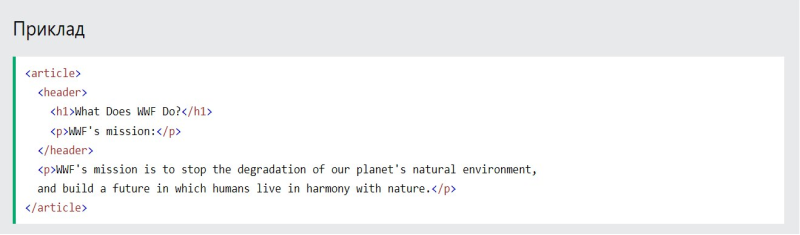

HTML5 Семантичні елементи
Семантичний елемент чітко описує його значення як для браузера, так і для розробника.
Приклади не семантичних елементів: < div > і < span > - нічого не говорить про його вміст.
Приклади семантичних елементів: < form >, < table > і < article > - чітко визначає його зміст.
Підтримка браузерів
Семантичні елементи HTML5 підтримуються у всіх сучасних браузерах
Крім того, ви можете "навчити" старих браузерів, як обробляти "невідомі елементи".
Прочитайте про це в підтримці браузера HTML5.
Нові семантичні елементи в HTML5
HTML5 пропонує нові семантичні елементи для визначення різних частин веб-сторінки:
- < section >
- < article >
- < header >
- < footer >
HTML5 < section > елемент
Елемент < section > визначає розділ в документі.
Згідно з документацією в HTML5: "розділ представляє собою тематичну угруповання контенту, зазвичай з заголовком".
Домашня сторінка зазвичай може бути розділена на розділи для ознайомлення, змісту і контактної інформації
HTML5 < article > елемент
Елемент < article > визначає незалежний, автономний вміст.
Стаття повинна мати сенс самостійно, і вона повинна мати можливість читати його незалежно від іншої частини веб-сайту.
Приклади того, де можна використовувати елемент < article >:
- Повідомлення на форумі
- Повідомлення в блозі
- Газетна стаття
HTML5 < header > елемент
Елемент < header > задає заголовок для документа або розділу
Елемент < header > повинен використовуватися в якості контейнера для вступного змісту.
В одному документі може бути кілька елементів < header >.
У наступному прикладі визначається заголовок для статті:
 До початку